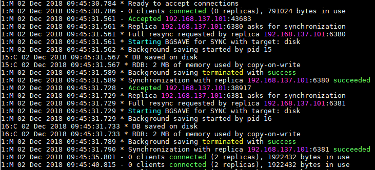
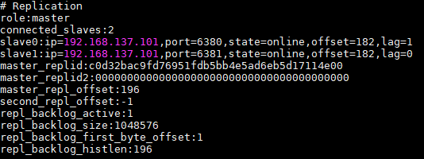

Redis Cluster 구성도

간단하게 정리하면.
- 각 서버 별로 Redis 3대를 설치. Master 1개, Slave 2개로 구성하여 Replication을 지원할 수 있도록 Cluster를 구성하였습니다.
- 각 서버 별로 Sentinel 3대를 설치. 양대비 원리에 맞추어 홀수개로 설정 하였습니다.
- 각각의 서버의 Sentinel 3대가 서버의 Master Redis를 감시합니다. (Failover 대기)
- Redis Cluster를 서버 3대에 설치. Data Sharding을 하기 위해 저장소를 3개로 분리하였습니다.
- HAProxy로 분산 처리 구축. 5000, 5002, 5004번 포트는 각 서버의 Master Redis를 바라봅니다.
- 5001, 5003, 5005번 포트는 각 서버의 Slave Redis 2대씩 바라봅니다.
지금부터 Redis Cluster를 어떻게 설치 하였는지 설치 과정에 대해 알아보도록 하겠습니다.
Docker를 이용한 Redis Cluster 설치
Redis-Cluster를 설치하는 순서는 아래와 같습니다. (CentOS 7기준으로 설치 하였습니다.)
- Git 설치 (미리 올려둔 Docker file들을 다운받기 위함)
- Docker 설치
- Docker-Compose 설치
- Docker Build
Git 설치 + Docker file 다운로드
1
2
3
4
5
6
7
8
9
10
11
12
13
14
15
16
17
18
19
20
21
22# git설치
yum -y install git
git --version # git 버전 확인
#Redis-Cluster 디렉터리 생성
mkdir -p /home/redis/redis-cluster
#Redis-Cluster-Home 이동
cd /home/redis/redis-cluster
#아래 디렉터리들은 각 Redis Container의 외부볼륨으로 설정하기 위해 생성하였습니다.
#==> Container 외부 볼륨을 설정해야 Redis Container가 삭제되더라도 Data가 보존됩니다.
#===> dump.rdb 파일이 생성되는 장소
mkdir -p ./redis-data/redis1
mkdir -p ./redis-data/redis2
mkdir -p ./redis-data/redis3
#Docker file Download
#설치파일을 다운받습니다.
git init
git remote add origin "https://github.com/jaehun2841/redis-cluster-on-docker.git"
git pull origin master
Docker 설치
1
2
3
4
5#docker 설치
curl -fsSL https://get.docker.com/ | sh
#docker 설치 후 docker 시작
service docker start
Docker를 yum으로도 설치가 가능하지만 버전이 낮아 Docker-compose를 설치 할 수 없습니다. 차후에 update까지 필요하니 위 url에서 제공하는 shell script를 실행하여 설치하도록 합니다. ※ 위 Script는 sudo 명령 또는 root 권한을 필요로 합니다.
Docker 설치 내용은 2장에서 기술한 내용을 참고하시길 바랍니다.
Docker-Compose 설치
1
2
3
4#docker 공식 github에서 다운로드
sudo curl -L "https://github.com/docker/compose/releases/download/1.23.1/docker-compose-$(uname -s)-$(uname -m)" -o /usr/local/bin/docker-compose
chmod +x /usr/local/bin/docker-compose
Docker-Compose 설치 내용은 4장에서 기술한 내용을 참고하시길 바랍니다.
Docker build
1
2
3
4
5# redis-cluster home 이동
cd /home/redis/redis-cluster
#docker build
docker-compose -f conf/docker-compose.yml up --build -d
- -f 옵션으로 docker-compose.yml 파일을 설정합니다. (docker-compose.yml 파일은 github redis-cluster 설치파일을 받을때 다운 받았습니다. )
- up 명령으로 docker container를 실행합니다.
- --build 옵션으로 build후 container를 실행합니다.
- -d 옵션으로 background로 실행되도록 합니다. (-d 옵션을 빼면 redis의 로그가....나오며 exit하는 순간 container가 stop됩니다.)
Redis Cluster를 빌드하기 위한 docker-compose.yml 파일
1
2
3
4
5
6
7
8
9
10
11
12
13
14
15
16
17
18
19
20
21
22
23
24
25
26
27
28
29
30
31
32
33
34
35
36
37
38
39
40
41
42
43
44
45
46
47
48
49
50version: '3'
services:
redis-master:
image: redis:5.0-alpine # image 옵션으로 redis공식이미지를 기반으로 생성합니다.
build:
context: .. # build file에 대한 context를 지정
dockerfile: Dockerfile #dockerfile명을 지정합니다. (Default는 "Dockerfile" 파일명을 가진 파일을 실행합니다.)
network_mode: "host" # Image가 Container가 되었을때 network모드를 host모드로 설정합니다 (docker0 인터페이스를 사용하지 않고 Host OS의 eth0 인터페이스 사용)
environment: # Container 내부에서 사용 할 환경변수를 설정합니다.
- REQUIREPASS=password1234
- CLIENTPORT=6379
- CLIENTHOST=192.168.137.101
- MASTERHOST=
- MASTERPORT=
volumes: # Host OS의 디렉터리와 Container내의 디렉터리와 연동합니다.
- "../redis-data/redis1:/data"
restart: always
redis-slave1:
image: redis:5.0-alpine
build:
context: ..
dockerfile: Dockerfile
network_mode: "host"
environment:
- REQUIREPASS=password1234
- CLIENTPORT=6380
- MASTERPORT=6379
- CLIENTHOST=192.168.137.101
- MASTERHOST=192.168.137.101
volumes:
- "../redis-data/redis2:/data"
restart: always
redis-slave2:
image: redis:5.0-alpine
build:
context: ..
dockerfile: Dockerfile
network_mode: "host"
environment:
- REQUIREPASS=password1234
- CLIENTPORT=6381
- MASTERPORT=6379
- CLIENTHOST=192.168.137.101
- MASTERHOST=192.168.137.101
volumes:
- "../redis-data/redis3:/data"
restart: always
Redis Container의 Network모드가 Host인 이유 Redis 공식 홈페이지의 cluster-tutorial에서 발췌한 내용입니다.
Redis Cluster and Docker
Currently Redis Cluster does not support NATted environments and in general environments where IP addresses or TCP ports are remapped. Docker uses a technique called port mapping: programs running inside Docker containers may be exposed with a different port compared to the one the program believes to be using. This is useful in order to run multiple containers using the same ports, at the same time, in the same server.
In order to make Docker compatible with Redis Cluster you need to use the host networking mode of Docker.Please check the --net=host option in the Docker documentation for more information.Redis Cluster에서는 NAT환경과 IP주소 또는 TCP포트가 재 매핑되는 환경을 지원하지 않는다고 합니다. 따라서 Docker에서 Redis Cluster를 호환되게 하기 위해서는 Host 모드로 사용할 것을 권고하고 있습니다.
Redis Container 생성을 위한 Dockerfile 작성
Docker-Compose build를 사용하면서 Dockerfile에는 Redis Container를 구성하는 공통적인 로직을 담았습니다. 주로 내부에서 file을 생성하거나 Host OS의 파일을 Container가 생성하는 시점에 복사하기 위한 로직이 주로 들어있습니다. 그리고 접근권한이 막혀 파일이 실행되지 않는 문제를 해결하기 위해 접근권한을 변경하였습니다.
1
2
3
4
5
6
7
8
9
10
11
12
13
14
15
16
17
18
19
20
21
22
23
24
25
26FROM redis:5.0-alpine //redis 이미지를 기반으로 빌드됨을 의미합니다.
MAINTAINER Carrey (jaehun2841@gmail.com)
# Copy Redis File
# 복사/추가 하는파일의 Container내 경로는 항상 절대경로로 작성하여야 합니다.
# 기존의 docker-entryporint.sh 파일을 삭제합니다.
RUN rm -rf /usr/local/bin/docker-entrypoint.sh
# 공통적으로 적용할 redis.conf 파일을 복사합니다.
ADD redis.conf /usr/local/bin/redis.conf
# Container가 생성, 시작하는 시점에 실행 시킬 docker-entrypoint.sh 파일을 복사합니다.
ADD docker-entrypoint.sh /usr/local/bin
## change access authority
RUN chmod 755 /usr/local/bin/redis.conf
RUN chmod 755 /usr/local/bin/docker-entrypoint.sh
RUN chown redis:redis /usr/local/bin/redis.conf
RUN chown redis:redis /usr/local/bin/docker-entrypoint.sh
#Redis Container에 대한 Port를 지정합니다. (내부포트이며 외부노출은 안됨)
EXPOSE $CLIENTPORT #CLIENTPORT에 대한 값은 docker-compose.yml에 정의되어 있습니다.
# Container가 생성, 시작하는 시점에 실행됩니다.
ENTRYPOINT ["/usr/local/bin/docker-entrypoint.sh"]
# Container 빌드가 완료되고 Redis Server를 실행시킵니다.
CMD [ "redis-server","/usr/local/bin/redis.conf" ]
Redis Cluster 설정
Redis Cluster에 대한 Replication 설정에 대해 알아보겠습니다.
설정 방법은 redis.conf 파일을 각 Container로 복사하여 공통적인 설정을 하였습니다.
각 redis.conf 파일에 대한 변경사항은 docker-entrypoint.sh 파일을 통해 redis.conf 파일 정보를 replace하였습니다.
1
2
3
4
5
6
7
8
9
10
11
12
13
14
15
16
17
18
19
20
21
22
23
24
25
26
27
28
29
30
31
32
33
34
35
36
set -e
## from redis-5.0
# Redis서버에 접근가능한 Host를 설정합니다.
sed -i "s/bind 127.0.0.1/bind $CLIENTHOST 127.0.0.1/g" /usr/local/bin/redis.conf
### redis port inside redis.conf
#redis.conf 파일의 port 6379 문자열을 port $CLINETPORT로 변경합니다.
#($CLIENTPORT는 docker-compose.yml파일의 Environment에서 지정하였습니다.)
sed -i "s/port 6379/port $CLIENTPORT/g" /usr/local/bin/redis.conf
# requirepass foobared 문자열을 requirepass $REQUIREPASS로 변경하였습니다.
#(Redis 접속 시 비밀번호를 설정하였습니다.)
sed -i "s/# requirepass foobared/requirepass $REQUIREPASS/g" /usr/local/bin/redis.conf
sed -i "s/# masterauth <master-password>/masterauth $REQUIREPASS/g" /usr/local/bin/redis.conf
### slaveof <masterip> <masterport> => slaveof $MASTERHOST $MASTERPORT
# $MASTERPORT가 공백이 아닌 Container에 대해 slaveof 설정을 통해 Master-Slave 설정을 합니다.
if [ "$MASTERPORT" != "" ];then
sed -i "s/# slaveof <masterip> <masterport>/slaveof $MASTERHOST $MASTERPORT/g" /usr/local/bin/redis.conf
fi
# first arg is `-f` or `--some-option`
# or first arg is `something.conf`
if [ "${1#-}" != "$1" ] || [ "${1%.conf}" != "$1" ]; then
set -- redis-server "$@"
fi
# allow the container to be started with `--user`
if [ "$1" = 'redis-server' -a "$(id -u)" = '0' ]; then
chown -R redis .
exec su-exec redis "$@"
fi
exec "$@"
Redis Cluster 실행 결과
Redis.log 
로그에서 0 clients connected (2 slaves) 라는 로그가 보입니다. Redis에 접속한 클라이언트 수는 0 client이며 2개의 slave redis와 연결하고 있습니다.
중간부분 로그에서 로그를 보면 slave로 설정한 Redis와 연동이 되는 것을 확인 할 수 있습니다.
redis-cli > info replication 
redis-cli에서 info replication 명령을 실행하였을 때, 조회되는 내용입니다. slave0, slave1에 대한 참조를 가지고 있는 것을 확인 할 수 있습니다.
참고
- https://redis.io/topics/cluster-tutorial